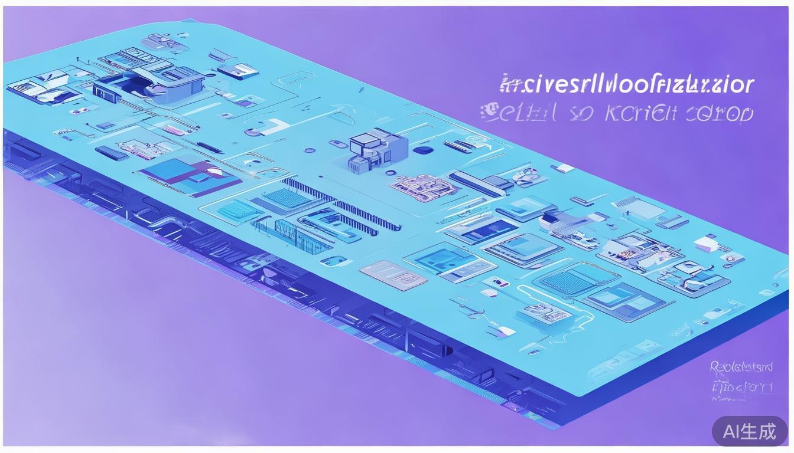

白驹 · 全局大脑 · AI 创作纪元
AI变现实操手册
学了AI，怎么赚钱？这篇手册给你10条经过验证的变现路径，每条都有具体操作步骤。
一、内容创作变现
1. 公众号流量主
门槛：500粉丝开通流量主
操作步骤：
- 选定一个垂直领域（职场/育儿/美食/科技）
- 用AI辅助日更（AI初稿+人工优化）
- 优化标题和封面，提高打开率
- 粉丝到500后开通流量主，广告自动插入
收入参考：万次阅读约30-100元，头部账号月入数万
2. 小红书品牌合作
门槛：1000粉丝开通蒲公英平台
操作步骤：
- 定位美妆/穿搭/家居/数码等变现强的领域
- AI生成文案+AI生成配图，日更2-3条
- 粉丝到1000后接品牌合作
- 报价参考：粉丝数×0.1-0.3元/条
3. 短视频中视频计划
平台：抖音中视频计划、B站创作激励
操作步骤：
- 用AI生成脚本（钩子+干货+结尾）
- AI配音+AI剪辑（剪映）
- 发布横版视频（1分钟以上）
- 播放量换收益，万次播放约10-50元
二、技能服务变现

4. AI代写服务
平台：淘宝、闲鱼、猪八戒、朋友圈
服务内容：论文润色、简历优化、商业计划书、演讲稿
定价参考：
- 简历优化：50-200元/份
- 演讲稿：100-500元/篇
- 商业计划书：500-2000元/份
5. AI绘画定制
服务内容：头像定制、插画约稿、产品概念图
平台：米画师、画加、淘宝
定价参考：
- 头像：20-100元/张
- 插画：200-1000元/张
- 商业概念图：500-3000元/张
6. AI培训/咨询
服务内容：企业内训、一对一咨询、线上课程
操作步骤：
- 打造个人IP（公众号/小红书分享AI干货）
- 积累案例和口碑
- 推出付费服务
定价参考：
- 企业内训：5000-50000元/场
- 一对一咨询：500-2000元/小时
- 线上课程：99-999元/人
三、产品变现
7. AI工具/插件开发
方向：Chrome插件、微信小程序、Notion模板、提示词库
操作步骤：
- 找到一个具体痛点（如：小红书文案生成器）
- 用AI开发MVP（最小可行产品）
- 上架到对应平台
- 通过广告/付费/订阅变现
8. 知识付费
形式：付费专栏、电子书、课程
平台：小报童、知识星球、知乎盐选
操作步骤：
- 选定一个AI细分领域（如：AI绘画提示词）
- 持续输出免费干货积累粉丝
- 推出付费深度内容
四、新兴机会
9. AI数字人直播
模式：用AI数字人24小时直播带货
工具： HeyGen、硅基智能、闪剪
优势：无需真人出镜，可批量复制
10. AI Agent服务
方向：为企业定制AI工作流
服务内容：
- 自动客服系统
- 内容自动生成流水线
- 数据分析报告自动化
定价：按项目收费，5000-50000元/项目
五、避坑指南
不要追求「躺赚」：AI是工具，不是印钞机。需要持续投入时间和精力。
不要违规：避免洗稿、抄袭、虚假宣传。长期主义才是正道。
不要all in一个平台：多平台分发，降低风险。
不要忽视交付质量：口碑是最好的营销。AI生成内容一定要人工审核。
六、启动 checklist
- 选定一个变现方向
- 注册相关平台账号
- 发布第一批内容（至少5条）
- 获得第一笔收入（不管多少）
- 复盘优化，持续迭代
核心：AI变现的本质是「用AI提升效率，用效率创造价值」。技术只是手段，价值才是核心。
出处声明：本页内容为白驹全局大脑原创，或已标注引用来源；改编内容遵循原始项目许可证（如 MIT / CC），不侵犯原作者权益。若引用内容涉及版权问题，请联系我们更正。